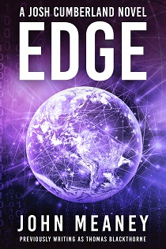

JOHN MEANEY
I'm John Meaney, and I write science fiction, fantasy and thrillers. Welcome to my virtual home! Pull up a chair, and let's catch up on what's happening.
NOW OUT... The new Donal Riordan book: TRISTOPOLIS REQUIEM
The cop: Donal Riordan, undead, imprisoned in a coffin below ground. The city: Tristopolis, gothamesque and baroque, its unchanging sky deep purple, its elevators propelled by indentured wraiths, and its power produced by necroflux reactors, fuelled by the bones of the dead.
When powerful conspiracies threaten Tristopolis from the far side of the world, can a freed Donal find a way to stop them, and in the process find a reason to carry on existing?
Also out... ON THE BRINK brings a timely new look at the Cold War spy thriller. Russian technology, a computer heist in 1950s East Berlin, and more.
Plus... DESTRUCTOR FUNCTION is a contemporary cyber thriller, introducing no-first-name Case, and his intriguing - and somewhat scary - colleague Kat.

My near-future thrillers EDGE and POINT, the first two Josh Cumberland books, are also newly available.

These are new, freshly revised editions of the books I previously published under the pen name of Thomas Blackthorne.
John Meaney... a brilliant, inventive writer... Absorption is his most compelling and accomplished work yet... he may produce his masterpiece in The Ragnarok Trilogy...Absorption is the best hard science fiction I’ve read this year, well written, exciting, mysterious, full of interesting characters and ideas...The Times, London
For readers of my Tristopolis books, please note that Black Blood and Dark Blood are the same book, released under different titles by different publishers, either side of the Atlantic. (If you buy books online, it's not obvious when you're buying a foreign import, which might be a different edition of something you already own.)
What I do
I live in South Wales, write books, teach a little software engineering, and train six days a week in my dojo. (That's the big shed in my garden. Or wherever I happen to be.) Simple.
The nice things people say
A brilliant, inventive writer.
The Times
A masterclass in characterisation.
Eric Brown, The Guardian
A spectacular writer. He makes SF seem all fresh and new again.
Robert J. Sawyer, Hugo Award-winning author
A wonderful writer who deserves worldwide recognition.
Cheryl
Morgan, Emerald City
John Meaney has rewired SF. Everything is different now.
Stephen Baxter
One of the best authors of hard SF in the world...
SFX
One of British science fiction's most original and exciting practitioners.
Barnes & Noble